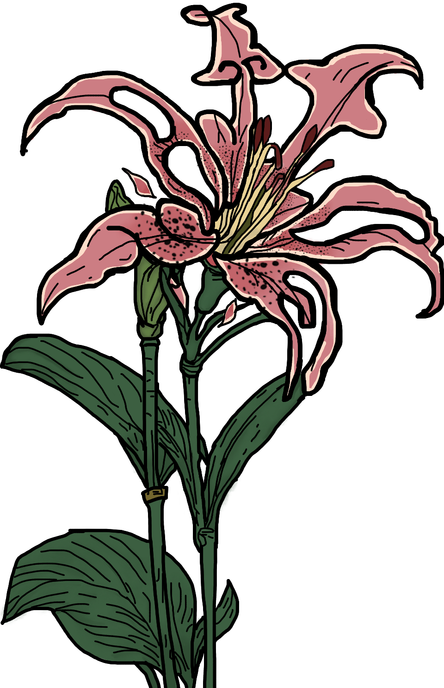
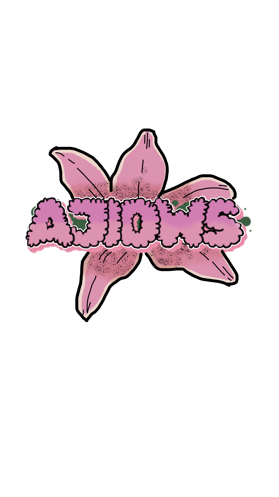
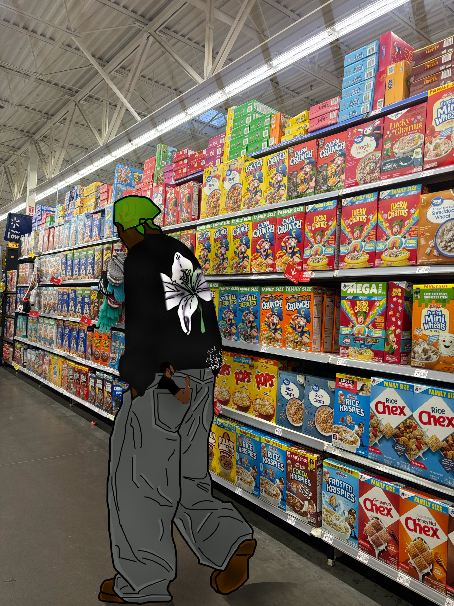

Bala en el Bolsillo
En los primeros días de haber empezado a trabajar en Walmart durante la noche, AJIO hacía llamadas por FaceTime. Como estaba trabajando, colocaba el celular en el bolsillo y Bala siempre decía: “Sácame del bolsillo”.

AJIO WAS STOLEN · EST. 2020

Para que exista la paz,
deben existir sacrificios.
Somos esclavos de la libertad.

Ajio Was Stolen nace de la necesidad humana de crear más y de consumir menos. Usamos el arte como impulso de cambio social, aunque ese cambio a veces parezca quedarse pendiente.
Este proyecto mezcla la nostalgia que viene del cambio: extrañar a las personas cercanas, los lugares concurridos y los recuerdos que permanecen.
En los primeros días de haber empezado a trabajar en Walmart durante la noche, AJIO hacía llamadas por FaceTime. Como estaba trabajando, colocaba el celular en el bolsillo y Bala siempre decía: “Sácame del bolsillo”.
Esta sección está en construcción.
Esta sección está en construcción.
Esta sección está en construcción.